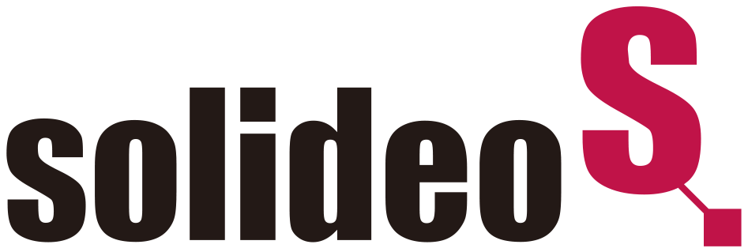

SoliSkill
프로젝트는 수시로 바뀌어도, 적합한 인력은 바로 찾는다
AI 인력 매칭가용 인력 현황원클릭 배치역량 자동 갱신
팀 스카이콩콩박선우 · 윤승미
01

SoliSkill·
개발 배경 · 문제프로젝트는 수시로 바뀌는데,
인력 배치는 매번 PM 문의에 의존합니다
“연계 작업에 특화된 사람 누구지?”
→
PM A“우리 팀엔 없는데…”
→
PM B“C 프로젝트에 있을걸요?”
→
문의가 계속 반복됩니다…
01
수시로 시작·종료
프로젝트가 열릴 때마다
인력 탐색을 처음부터 다시 합니다.
02
현장·고객사에 분산
인력이 흩어져 있어 관리자조차
전체 역량을 파악하기 어렵습니다.
03
프로젝트마다 반복
찾은 결과가 기록에 남지 않아
다음에도 같은 문의를 반복합니다.
02
SoliSkill·원인 → 해결
원인은 하나, 함께 보는 객관적인 자료가 없어서입니다
지금의 원인SOLISKILL의 해결
통합된 역량 문서가 없다→전 직원을 같은 양식으로 한곳에역량 인벤토리 · 숙련도 Lv1~5 · 근거 출처
리더마다 판단 기준이 다르다→누구에게나 같은 공식적합도 계산 기준을 화면에 공개
사람을 찾으려면 PM마다 문의해야 한다→검색 한 번AI 인력 매칭 · 문장으로 찾기
누가 지금 투입 중인지 모른다→조직도에서 바로 확인가용 · 투입 · 풀로드 상태
끝난 프로젝트가 기록에 남지 않는다→완료하면 역량이 자동 갱신참여자 사용 기술 Lv +1
03
SoliSkill·해법
찾기 · 확인 · 배치 · 갱신 네 단계로 이어집니다
01
찾기
역량이나 문장으로 검색하면
AI가 적합도 순으로 추천
02
확인
추천 이유·계산식·근거 이력,
조직도에서 지금 투입 가능 여부
03
배치
버튼 한 번에 프로젝트 생성,
배치 전 조합 평가로 리스크 점검
04
갱신
완료하는 순간 참여자 역량이
자동으로 한 단계 성장
↻ 갱신된 역량으로 다음 배치가 더 정확해집니다
04
SoliSkill·기능 한눈에
SoliSkill은 여섯 가지 기능으로 구성됩니다
🤖
AI 인력 매칭핵심
문장으로 찾기 · 추천 이유 · 가용 배지
계산식 공개 · 기준 조정 · 익명 ID
📋
배치 · 운영
원클릭 프로젝트 생성 · 조합 평가
단일 의존 경고 · 칸반 5단계 · 자동 성장
🧭
조직도
실제 조직 트리(정직원 · 협력 인력 포함)
가용·투입·풀로드 상태 · 검색
📊
조직 역량
분야·강점 분포 · 인사이트 한 줄
부서 필터 · 이력서 자동 채우기
👤
마이페이지
숙련도와 근거 · 포트폴리오
역량 개발 기록 · 공개 스위치
🔐
로그인 · 권한
역할별 로그인 · 직원은 본인만
관리자 전용 기능 · 다크 모드
05
SoliSkill·01 찾기 · AI 인력 매칭
필요한 인력을 문장으로 검색합니다
필요 역량
전자정부 ✕연계 작업에 특화된 인력 필요
적합 인원 찾기
- 1순위 김은태 책임 — 시스템 연계 Lv.5
- 점수만이 아니라 왜 이 사람인지 이유까지
- 지금 바로 합류 가능한지 가용 배지로
여러 PM에게 일일이 확인하던 과정을 한 번의 검색으로
※ 화면 속 직원 역량은 시연용 가상 데이터입니다
06
SoliSkill·적합도 계산 · 조정 가능
96점은 어떻게 계산했을까요?
공식 · 모든 직원에게 같은 기준
보유 기술 = 60 + 숙련도 × 8
Lv.168
Lv.276
Lv.384
Lv.492
Lv.5100
요구 항목마다 점수를 매겨 평균
예시 · 김은태 책임
전자정부 Lv.492
시스템 연계 Lv.5100
(92 + 100) ÷ 2 =96
예시 기준지금 점수 기준은 시연을 위한 예시입니다 — 실제 기준은 조직에서 정해 적용합니다관리자가 기준을 바꾸면 모든 점수가 바로 다시 계산됩니다
※ 화면 속 직원 역량은 시연용 가상 데이터입니다
07
SoliSkill·02 확인 · 조직도
투입 가능 여부,
조직도에서 바로 확인
가용지금 합류 가능
투입진행·검토 1건
풀로드2건 이상
SoliSkill · 조직도 · 현재 배치 현황
※ 화면 속 직원 역량은 시연용 가상 데이터입니다
08
SoliSkill·03 배치 · 조합 평가
버튼 한 번에 배치, 배치 전에 리스크 점검
- “이 3명으로 프로젝트 만들기”
- 인원·기술이 채워진 채로 열림
- 이 조합 평가하기
기술은 다 갖췄지만 Java는 김은태 1명뿐
→ 이탈 리스크로 미리 경고합니다
※ 화면 속 직원 역량은 시연용 가상 데이터입니다
09
SoliSkill·04 갱신 · 자동 역량 갱신
완료로 옮기는 순간,
역량이 자랍니다
참여자의 사용 기술이 자동으로 한 단계.
아무도 이력서를 고치지 않아도 항상 최신.
※ 화면 속 직원 역량은 시연용 가상 데이터입니다
10
SoliSkill·조직 역량 분포 · 인사이트
개인 역량이 모여
조직 현황이 됩니다
분야·강점별 분포를 한눈에 보고,
가장 얇은 분야를 짚어 줍니다.
중부지사 데이터 1명 → 보강 검토
채용·교육 계획의 근거가 됩니다
※ 화면 속 직원 역량은 시연용 가상 데이터입니다
11
SoliSkill·신뢰
역량은 민감한 정보라서 이렇게 보호합니다
🔒
AI에는
익명 번호만
이름·연락처 대신 요청마다 바뀌는 일회용 ID와 역량만 보냅니다.
👤
직원은
본인 정보만
직원은 자기 역량과 참여 프로젝트만, 관리자·PM은 조직 전체를 봅니다.
🔑
공개 여부는
본인만
내 역량을 공개할지 말지는 본인만 바꿀 수 있습니다.
⚡
AI가 없어도
멈추지 않음
AI를 못 쓰면 규칙 기반으로 자동 전환하고, 배지로 구분합니다.
공정성AI 모드에서도 점수는 공개된 같은 공식으로 계산 — AI는 후보와 추천 이유만 제안합니다
12
SoliSkill·라이브 시연
실제 화면으로
시연하겠습니다
① 메인 시나리오연계 작업 담당자 찾기찾기 → 기준 확인 → 조직도 → 원클릭 배치 → 완료 → 성장
② 그 밖의 주요 기능그 밖의 주요 기능지사 보드 · 마이페이지 · 조직 역량 · 이력서 자동 채우기 · 직원 화면
▶ 이 화면을 클릭(또는 Enter)하면 백업 시연 영상이 재생됩니다 · 라이브 시연 후에는 → 로 다음 장표
※ 화면 속 직원 역량은 시연용 가상 데이터입니다
13
SoliSkill·기대효과
기대효과는 네 가지입니다
01인력 탐색의 시간과 노력 감소
프로젝트마다 반복되던 문의를 검색 한 번으로
02같은 근거로 객관적인 배치
숙련도 · 검증 이력 · 가용성, 공개된 같은 공식
03효율적인 인력 운영
누가 바쁘고 누가 여유 있는지 한눈에
04배치 리스크 사전 대비
한 명에게만 의존하는 기술을 미리 경고
14
SoliSkill·마무리
프로젝트는 수시로 바뀌어도,
적합한 인력은 바로 찾을 수 있습니다.
팀 스카이콩콩 · 박선우 · 윤승미 — 감사합니다
15
❚❚ 일시정지 — Space로 계속
Space 또는 클릭으로 시작 · ←/→ 장표 이동 · F 전체 화면 · T 타이머 · 대본 창에서 열었다면 대본의 ▶ 시작을 누르세요